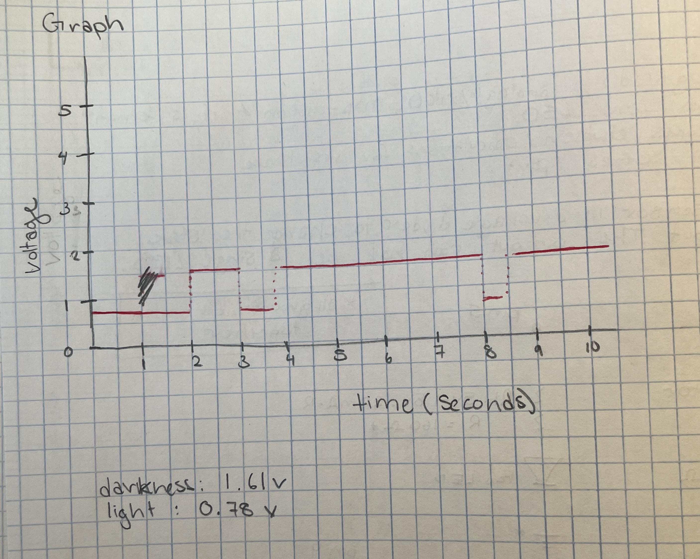

Mai Li's Assignment 3!
A3: Input/Output! Write up. Calculations are by each resistor and below as well.
Calculations
These resistance calculations show the minimum required resistance to maintain a 20mA current. I don't have
specifically those Ohms resistors, so I used higher resistance for each of the LEDs. For red and green, I used the
220Ω resistor and for blue I used a 100Ω resistor.
Photoresistor circuit: As discussed in class, these controlling circuits will use a 10KΩ resistor because it
guarantees a very limited current. If we used a battery to power this entire circuit, we want as much power to the LEDs,
giving the most light rather than powering the controlling unit. The photoresistor will still work as it's supposed to
with a higher resistance.
A3: Input/Output! circuit photo
A3: Input/Output! gif of circuit turning on when the brightness is low enough. (If you look close enough
the LED pulses a little, changing the brightness as the outside brightness changes, which is determined by how
close my finger is to the resistor.)
Code
// HCDE 439
// Mai Li Jorgensen
// A3: Input/Output!
void setup() {
// set up each of the LED pins as outputs
pinMode(5, OUTPUT);
pinMode(6, OUTPUT);
pinMode(9, OUTPUT);
// photoresistor doesn't need it as it's already set in an analog pin
// begin series at data rate in bits per second as defined in the bottom of the screen
Serial.begin(9600);
}
void loop() {
// grab the number of brightness between 0 and 1023
int brightness = analogRead(A0);
// serial print the brightness picked up by the photoresistor
Serial.print("sensor = ");
Serial.print(brightness);
// lowest I got was ~ 669, highest ~ 815
// map the 0-1023(photoresistor brightness scale) to 0-255(LED brightness scale)
int output = map(brightness, 0, 1023, 0, 255);
// serial print the mapped LED brightness
Serial.print("output = ");
Serial.println(output);
// lowest I got was ~ 153, highest ~ 203
// if the brightness is low (lower than 200), turn on the RGB LED (all) at the output brightness
if (output < 200) {
// turn on red
analogWrite(5, output);
// turn on green
analogWrite(6, output);
// turn on blue
analogWrite(9, output);
}
else {
// turn off red
digitalWrite(5, LOW);
// turn off green
digitalWrite(6, LOW);
// turn off blue
digitalWrite(9, LOW);
}
}
Additional Questions:
1: In your voltage divider, can the variable resistor be either R1 or R2 or does it need to be
one or the other? Justify your answer with example calculations.
While the variable resistor can be placed first or second, it is better for it to be at R1. As shown below, treating the
photoresistor as the first resistor, has more output volts than when it's used as R2. With more output volts, (position R1)
the longer the photoresistor can run for and give more charge to the LEDs.
I measured the resistance from the photoresistor and got around 1.56Ω.
Photoresistor = R1:
Vout = 5V × 10KΩ/10KΩ + 1.56KΩ
Vout = 4.325V (More volts, maintaining the battery longer.)
Photoresistor = R2:
Vout = 5V × 1.56KΩ/10KΩ + 1.56KΩ
Vout = 0.675V
2: Draw a graph where the x-axis is time and the y-axis is voltage. Plot the voltage at
V-measure of your voltage divider of your shared gif.

I measured the voltage when there was as much light as possible and as little light as possible. As seen in the photo, I
got around 1.61V when there wasn't much light, and less than 1V when there was light. Using this information, I then used
my video to understand when there was darkness and light. Mapping the light and dark to the 10-sec video, I drew out the
voltage for the divider.
Disclaimer: These numbers may not be completely accurate. I videoed on Saturday morning and measured the voltage on
Sunday afternoon due to appointments that interupted working on this homework. I am guessing the difference in light at
these times probably changed the voltage reading a little.
3: AnalogWrite and analogRead are respectively 8-bit and 10-bit values. Imagine you had 10-bit
PWM and a 16-bit analog-to-digital converter instead. How would this change your map() code? Explain your answer.
Having a higher bit value for each analogWrite and analogRead means the numbers used are different the PWM (LED fading
uses this) would be out of 1023 and the input (photoresistor scale) would be out of 65535. These larger numbers means
there are more smaller steps of brightness and PWM for the resistor and LED to be at. This would make the fade of an
LED less noticable (smoother transitions of the on/off percentage) due to increased amount of steps; there is
less of a change between 0 and 1 out of 1023 and 65535
than there is from an 8 and 10-bit sequence. The map() code would change since the ranges increases, making each
of the input and output number scale differently to each other.